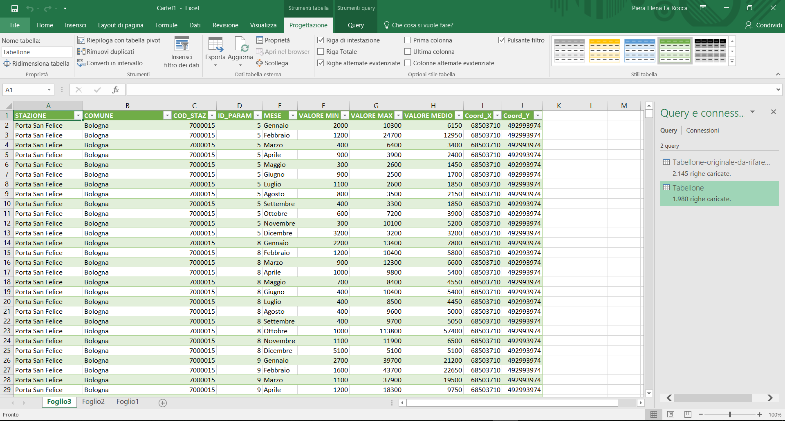

Nella prima fase abbiamo recuperato e organizzato le informazioni in tabelle create con il software Microsoft Excel. I dati
sono quelli rilevati ed analizzati dalle stazioni di rilevamento dell’Emilia Romagna, recuperati dal
sito dell’Arpae. I file usati relativi ai valori dei parametri analizzati dalle varie stazioni, sono
stati scaricati dalla cartella condivisa su Google Drive raggiungibile a questo indirizzo:
https://drive.google.com/drive/folders/0B-owdnU_9_lpei1wbTBpS3RyTW8?usp=sharing
;
le caratteristiche riguardanti le singole stazioni sono state selezionate dalla tabella raggiungibile
da:
QUI
;
mentre, le caratteristiche dei parametri da:
QUI
. I file sono stati scaricati ed importati in Microsoft Excel in formato csv. Da ogni singola tabella sono state compiute
operazioni di filtraggio al fine di recuperare solo i dati necessari al nostro lavoro. Nelle tabelle
sono riportati i seguenti dati: Stazione; Comune; Codice stazione; Id parametro; Valore minimo medio;
Valore massimo medio; Valore medio; Coordinata x; Coordinata y.
